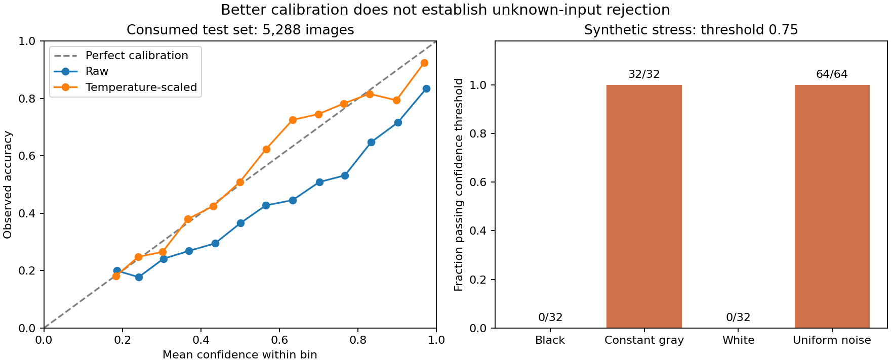

Confidence is not an unknown detector.
A post-hoc audit of the frozen DoMars16k classifier. No human scoring and no production ranking changes.
Decision: rejection gate not passed
Temperature scaling improved test negative log likelihood from 1.6522 to 1.4891 and 15-bin ECE from 0.1564 to 0.0303. It does not change class predictions. A threshold selected on validation retained 748 of 5,288 test images (14.15%); 128 retained predictions were wrong (17.11%).
All 64 uniform-noise images and all 32 constant-gray images passed the threshold. This rejects the claim that calibrated confidence alone detects invalid or unknown inputs.

Frozen procedure
Fit a scalar temperature on 2,747 validation images; T = 1.664472. Select the highest-coverage threshold from a predefined grid with at least 100 retained validation examples and a Wilson upper error estimate at most 15%. The selected threshold was 0.75, sealed before opening cached test predictions.
The validation sources had already selected the checkpoint. The test set had already been used in earlier reports. This is an exploratory audit, not a new untouched holdout. Within-source dependence also prevents the image-level Wilson heuristic from being a group-level risk guarantee. Full per-group and per-class counts are in the report.
Synthetic stress cases
| Input | Accepted / total | Mean confidence |
|---|---|---|
| zeros | 0/32 | 0.501 |
| constant | 32/32 | 0.817 |
| ones | 0/32 | 0.234 |
| uniform_noise | 64/64 | 0.930 |
Constant inputs are repeated copies and do not represent independent trials. Uniform noise uses a fixed random seed. Blank rejection does not imply recognition of unfamiliar natural terrain.
Reproduce and inspect
Audit protocol · Sealed temperature and threshold · Full results · Independent arithmetic checks · Audit code
Training data, source-group split and checkpoint remain unchanged. All inference and checks ran on the project server. AI assisted code and documentation; the numerical results come from the recorded frozen model and public labels.
Next requirements remain independent real-domain OOD data, Earth-domain validation, fine labels and multimodal/purpose-relevance evaluation. No deployment or NASA adoption is claimed.